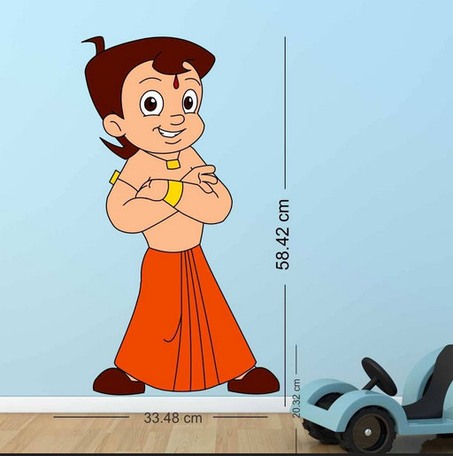

Tap Academy Students Review
Our complete online training has made students learn to code anytime anywhere & got placed in various Companies. Here are our few students placed at various companies
Review 1

Manoj D K Reva University Banglore
Tap Academy is known for its great education. There were some tough times, but Tap Academy’s support and great teachers helped me overcome those challenges. I had some great teachers who made learning fun and easy. I want to thank Tap Academy for teaching me well and helping me get my job at Euromonitor International. The knowledge I gained here played a crucial role in confidently answering questions during my interviews. I can confidently assure that joining tap academy would be a wise decision. My personal experience and the valuable skills I gained make me highly
recommend it to anyone.
Review 2
Nisarga B Dayananda Sagar College of Engineering Banglore
I can improve my skills. Their are providing an assignment to do . To increase confidence & communication skills . Friendly staff , Good environment. I definitely suggest the peoples who people think coding is difficult. They are teaching from the beginning. So strongly recommend it .
Review 3
Girish I PES University Banglore
my experience with [Tap Academy] was exceptional. The academy's commitment to delivering high-quality digital education is commendable. Whether you're a working professional seeking career advancement or an aspiring digital enthusiast, I highly recommend [Tap Academy] for its comprehensive curriculum, expert instructors, interactive learning environment, practical approach, community building, and ongoing support. This academy is undoubtedly a game-changer in the world of digital education.
Review 4
Prathama C BMS College of Engineering Banglore
I had an excellent experience at Tap Academy. The instructors were knowledgeable, passionate, and dedicated to helping students succeed. The curriculum was well-structured, and the hands-on approach made learning enjoyable. The institute provided a supportive and inclusive environment, fostering both personal and professional growth. I highly recommend Tap Academy to anyone seeking quality education and a great learning atmosphere. Please join this academy for best software career in your life .
Review 5
Druva S Indian Institute of Technology (IIT)Banglore
Tap academy made me understand the concepts in a very clear way. Faculty in tap academy are amazing, even the concepts that many students assume to be hard , tap academy teaches in a very simple way, which can be understood by everyone.
They provide a platform where we can practice the codes, mcq's etc., and concepts can be revised very easily with the help of their recorded classes.